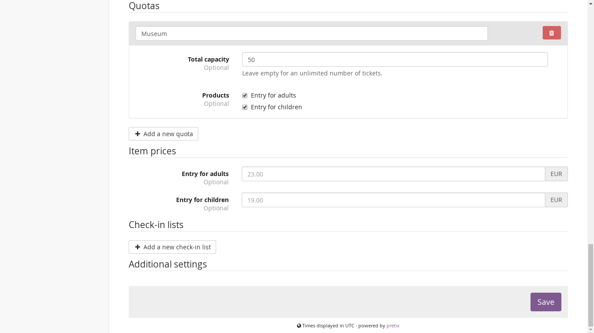
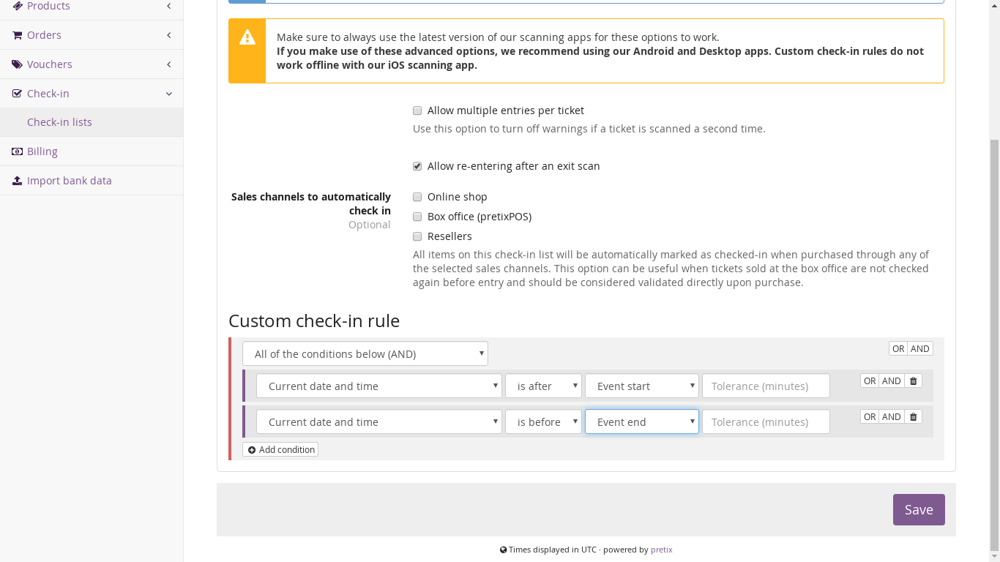

Use case: Time slots¶
A more advanced use case of eventyay is using eventyay for time-slot-based access to an area with a limited visitor capacity, such as a museum or other attraction. This guide will show you the quickest way to set up such an event with eventyay.
First of all, when creating your event, you need to select that your event represents an “event series”:

You can click here for a more general description of event series with eventyay, but everything you need to know is in this chapter as well.
General event setup¶
Before you go further, set up your products that you want to sell for each time slot, such as different types of entry.
Creating slots¶
To create the time slots, you need to create a number of “dates” in the event series. Select “Dates” in the navigation menu on the left side and click “Create many new dates”. Then, first enter the pattern of your opening days. In the example, the museum is open week Tuesday to Sunday. We recommend to create the slots for a few weeks at a time, but not e.g. for a full year, since it will be more complicated to change things later.

Then, scroll to the times section and create your time slots. You can do any interval you like. If you have different opening times on different week days, you will need to go through the creation process multiple times.
{kind=link}
Scroll further down and create one or multiple quotas that define how many people can book a ticket for that time slot. In this example, 50 people in total are allowed to enter within every slot:
{kind=link}
Do not create a check-in list at this point. We will deal with this further below in the guide. Now, press “Save” to create your slots.
Warning
If you create a lot of time slots at once, the server might need a few minutes to create them all in our system. If you receive an error page because it took too long, please do not try again immediately but wait for a few minutes. Most likely, the slots will be created successfully even though you saw an error.
Event settings¶
We recommend that you navigate to “Settings” > “General” > “Display” and set the settings “Default overview style” to “Week calendar”:

Now, your ticket shop should give users a nice weekly overview over all time slots and their availability:

Check-in¶
If you want to scan people at the entrance of your event and only admit them at their designated time, we recommend the following setup: Go to “Check-in” in the main navigation on the left and create a new check-in list. Give it a name and do not choose a specific data. We will use one check-in list for all dates. Then, go to the “Advanced” tab at the top and set up two restrictions to make sure people can only get in during the time slot they registered for. You can create the rules exactly like shown in the following screenshot:
{kind=link}
If you want, you can enter a tolerance of e.g. “10” if you want to be a little bit more relaxed and admit people up to 10 minutes before or after their time slot.
Now, download our Android or Desktop app and register it to your account. The app will ask you to select one the time slots, but it does not matter, you can select any one of them and then select your newly created check-in list. That’s it, you’re good to go!